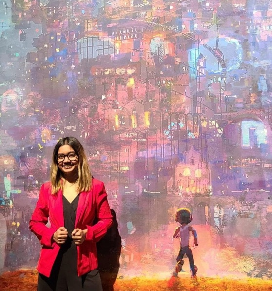

Ankolika De

Penn State University
College of Information Sciences & Technology
Hello! I'm Ankolika,
an interdisciplinary researcher.
I am a fourth-year PhD candidate in the College of Information Sciences and Technology at Penn State, advised by Dr. Kelley Cotter. I study how people engage with and adapt to platform technologies — including AI systems and social media — and analyze how technological change is framed in corporate and public discourse.
I collaborate with communities to design more inclusive and accountable systems. Using methods such as interviews, focus groups, content and discourse analysis, and participatory design, I center user perspectives. My research draws from Human-Computer Interaction, Information Sciences, Media Studies, Critical Platform Studies, and Science and Technology Studies.
I hold a B.S. in Computer Science with a minor in Psychology from City University of Hong Kong, where I graduated with First Class Honours. My work has been published at CHI, CSCW, ICA, FAccT, AIES, and in journals including New Media & Society, Platforms & Society, and Convergence.
Outside of research, I'm an avid Bharatanatyam dancer and was part of Natya — Penn State's only competitive classical dance team. I enjoy reading, cooking, and travelling. Feel free to reach out at [email protected]!